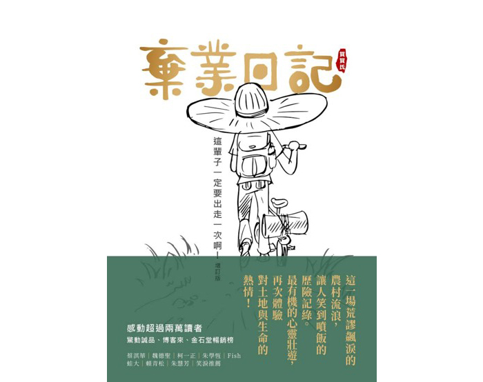

|  |
公司有安排【達人講座_第14講】直接跟農夫買的外部講師課程，當初報名參加課程初衷是家裡年邁的父母親返回東北角家鄉務農，一方面自己小時候也算半個在農村長大的小孩，剛好公司有安排此一講座，藉由課程透過講師的豐富經驗和知識分享去更加瞭解農夫辛苦的心路歷程，在課程中很幸運的獲得講師一本贈書，看完後分享這本好書的內容推薦給大家。
棄業日記這本書主要是以幽默但引發省思的文筆來呈現，作者以其流浪到一般人罕至之處，和當地農夫一起生活體驗並從農村生活所感動讓作者成立直接跟農夫買的社會企業。作者在這本書裡面，把從原本廣告設計工作辭職的過程到實際去拜訪農夫一起生活當志工的生活點滴，每一段故事透過幽默手法呈現出對土地與生命的熱情，接下來導讀指南精華整理如下：
辭職，就為二號土鳳梨
核心重點：作者原本工作為廣告文案設計師，把好的商品透過廣告文宣講活、把商品透過神化，讓商品透過廣告創造更多的買氣，以及在國內外拿下許多廣告創意的獎項，不過作者卻因每日工作步調規律空虛，偶然在一張罕見的長文案土鳳梨酥DM寫著：不懂五號，你不懂香水；不懂二號，其實你不懂鳳梨。這種足以贏得最佳文案的文字，不是為了得獎出現在特別製作的廣告裡，而是默默躺在一盒土鳳梨酥裡，從創意DM可以讓消費者直接地清楚和認同購買，能讓台灣有更多二號土鳳梨田，又有更多老農能繼續種植鳳梨。透過好的文宣，除了能讓企業變得更有錢，挖出消費者口袋裡的錢，與汲汲營營於廣告獎之外，對社會有正面價值。作者熱愛鄉土的熱血在大腦發酵了三個月，終於在某一天和創意總監遞上辭呈，於是開始到全台灣尋找感動。
就是那個鴨子! 呱!-- 第一個農夫朋友-阿銘
核心重點：作者和阿銘僅只有透過數十次部落格對話得知，農夫是一位對生態保育瞭若指掌，但販賣自己無農藥的野蓮一籌莫展，觸發了作者發自內心的感動，也讓作者透過商品文案來換取農夫的生態知識，作者到了麻豆後，發現原來鴨子呱呱並不是養鴨園，而是一棟透天厝，一樓是店面，二、三樓套房是出租給學生，讓作者到麻豆重新體驗學生的生活，作者透過幽默風趣的文字比喻來激發自己對體驗農夫生活的熱情。
她不嗑藥，她叫野蓮
核心重點：野蓮，她不像水蓮一樣，待在施化肥的池子裡長大，而是在清澈的水裡和魚養一起，也不像水蓮一樣靠嗑藥來維持好看的外表，她只要搔首弄姿、就能誘惑小魚用嘴巴幫她做天然SPA，透過天然無毒最原始自然種植的方式。作者透過擬人法來表達呈現農夫在種植野蓮過程中，完全是採用無毒和魚類一起共生的種植方式，這段內容所要呈現的是農夫對於種植野蓮的方式回歸到最原始的初衷，採用共生無毒的天然風格。
木箱的秘密
核心重點：農夫的腳踏車總是載著一個神祕的木箱，這個箱子是農夫親手做的，箱子上面刻著美麗的圖騰和野蓮花，讓作者有衝動想把箱子拆下來裝到自己的小摺，可惜小摺沒有置物架，才讓作者打消了這個邪惡念頭，直到有一天作者和阿銘去了一趟烹飪教室，終於看到箱子裡面真面目是一包包洗得清爽嫩綠的野蓮，阿銘為了保鮮，還用了一條濕布覆蓋在包裝上。原來木箱是用來運送野蓮用的，在烹飪教室裡面，老師發動了團購力量支持了農夫，也傳授了很多美味的野蓮料理，在回程的路上，感覺木箱看起來更美了。
作者在這段的歷程所想要表達的是，除了農夫在種植的方式採用天然無毒的訴求之外，透露出農夫也有心思細膩的巧思。
貴婦去角質，傻瓜二次洗
核心重點：野蓮採收後一定要先用去角質手套幫她做貴婦級全身SPA，用自製牙刷幫她洗掉頭上的泥巴，還要小心翼翼用雙層黑膠布幫她保濕防曬，免得營養流光，最後回到家，拿起蓮蓬頭，用流動的清水二次清洗。有人說我們傻，明明就已經沒有農藥殘留，這麼做真的很費工夫！只不過想到客人不需要費工洗滌，一打開就能烹調品嚐，我們的內心不免小小虛榮一下，以效益來說，實在不符合成本，一包才不過幾十塊，換算每小時的工資，讓作者不敢進一步去計算，然後作者決定該好好來和阿銘研究一下低到不合理的訂價了。
這次不是大富翁遊戲
核心重點：農夫告訴作者野蓮訂價一包只有40元，但因為無毒摘植需要耗費非常多人力，換算下來的收入無法量產的問題，作者透過生產履歷的方式，讓野蓮的價格可以比原來多一點五倍左右，但即使如此，野蓮並不是家庭經常食用的蔬菜，餐廳礙於成本也不太會訂有機野蓮，需求量無法提升的問題，讓作者陷入思考野蓮可以拿來做加工，可以和有機銷售平台合作，或是透過農會提供協助陷入另一個層次的思考。
天上掉下來的金色地毯
核心重點：作者來到花蓮最南的一個鄉-富里，三面環山，沒有空污，溪水充滿著麥飯石，水質特別純淨。作者選擇這裡是因為它是全台第一個有機村，另外一個原因是很冷門，上網查到的都是舊資料，這讓作者充滿了探險的感覺，作者站在羅山這塊金色的毯卻一點不興奮，而是想哭，是因為發現原來每天吃的米這麼美，還是聞到甘甜的空氣，還是心底好久不曾這樣清澈平靜。
回來米
核心重點：一塊七十歲老農的好心地，沒有使用除草劑、殺蟲劑，只有平衡就好的傻勁和蟲也要和平相處的好心地，這讓消失半世紀的鳥兒以及螢火蟲也回來了，連農夫最愛的女兒都從台北帶著傳承的心回來，這就是一粒粒能把奇蹟找回來的回來米。此段的寫作用隱喻法，把農夫在農作用原始耕種不破壞大自然生態，並以回來米來形容自己的女兒回來傳承繼業。
自大的黃豆
核心重點：你不喜歡自己的孩子太早熟，一定也不能容忍糧食用不正常的方式長大，自大的黃豆堅持自己長大，不讓科學怪人注入奇怪基因，也沒有使用農藥長大，你也會為你的健康而自大。這一段的重點也是在於強調農夫所種的黃豆都是用最天然的種植方式，不會造成身體的負擔。
傑克！這真是太神奇了！
核心重點：一包定價200多元的米，價格雖然漂亮，但是到農夫手上恐怕只有剩下定價的三成，真正的生產者反而像是食物鏈最底層的生物，撿大家剩下的殘渣吞食。這讓作者想到名牌包真是個奇蹟，不能填飽肚子，但是每台斤的售價竟然可以高達數萬甚至百萬，生產者的收入更是一秒鐘可以幾十萬上下，這個世界真是太神奇了。作者在這段敘述裡面，引喻反諷法來呈現農夫耕作的辛苦，但無法達到同工同酬的概念，也讓作者信念要為農民創建社團平台的理念。
豐收
核心重點：回來米要收割了，作者跟在老農夫的背後將稻稈往前推，鐮刀往斜下拉，賣力地堆阿拉阿，割起一把把金黃稻穗。農夫的老婆和小孩也沒閒著，努力在廚房準備收割後要吃的點心，這收割點心又叫做割稻飯，是農村相當可愛的傳統。因為以前沒有機器收割，一塊田要好多人互相幫忙才收得完，所以一到收割季大家就會互相幫忙鄰居收割，被幫忙的田主就會作東，負責大家一天所需的點心和食物，雖然現在已經有收割機了，過去八個人要收割八天的工作，收割機只要嚕三個小時就完成，不再需要這麼多的人力，不過在這個村子裡可愛又有人情味的傳統卻從沒斷過。作者拿著相機站在高處看著這一切，突然一度哽咽。寫廣告客戶很喜歡生命力的字眼，大家都喜歡談自己寫的多麼有生命力，倒沒有真實的感受過這三個字到底是甚麼東西，作者坐在載穀車的陰影下，狼吞虎嚥吃著割稻飯，不知是太好吃還是太熱，作者的眼角竟然又熱淚盈眶滴下一滴莫名的水珠。這一幕幕的畫面，也喚起我小時候鄉下的場景，每到稻米收成時，感覺家裡很熱鬧，每天家裡人來人往，原來家裡三餐都有香噴噴美食可享用，長大後才知道這就是割稻飯由來。
總結
這本書的內容藉由作者當初的夢想，放棄了高薪的工作到每個農村進行流浪，也燃起了作者希望台灣美麗農村能被大家看見的想法，於是作者成立了台灣第一個農業網社團平台，幫助農夫辛苦的農作，可以讓消費者在平台直接看到農夫的履歷，和放心地購買無毒有機農產品，藉由平台來行銷廣告更可以讓農夫不再讓豐收的農作物被層層盤商剝削掉利潤，後來作者更進一步變成社會企業，和許多希望把土地恢復美好的農夫與消費者，透過最純樸簡單的方式找回初衷一起努力圓夢。
我也有感在台灣人口逐漸高齡化，城鄉差異仍然存在且台灣年齡逐漸老化的社會裡，鄉村裡原本的農夫逐漸都變成老農夫了，年紀輕的一輩大都離鄉背井到都市打拼生活，不想再回到鄉村靠天吃飯收著微薄的收入，但失去的是家鄉，曾經是一片美好的稻田或是蔬果園，美麗的風景卻逐漸凋零而變成一片雜草叢生荒地，說得很容易，但農業的體力活需要毅力去貫徹和實踐，需要對這塊土地有熱情和動力才有辦法一直堅持下去。
作者藉由原本既有的行銷專業將夢想逐步去實踐計畫，可以讓更多年輕人願意返鄉去種植有機的農作物，或許這就是作者書裡面提到所謂的找回土地的熱情、內心真正的感動，藉由這本書也告訴我們做任何事一定要抱著熱情，找出內心的感動去實踐自己的夢想。
【註：圖文出自於棄業日記圖書】